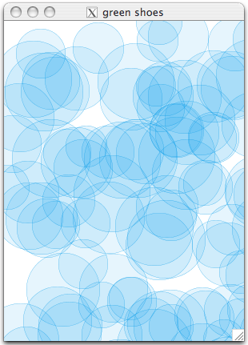
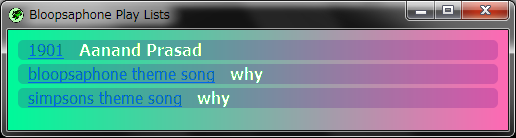
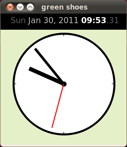

The Green Shoes Manual 1.0.337
Introducing Green Shoes
Green Shoesは、OS XやLinuxではどうですか？Windowsと同様ですか? 人々はすぐにもそのように攻め立てます！ でも大丈夫、全て試していますからね。
それでは、Green Shoesのインストールや実行について入る前に、何ができるのかの参考に、 ちょっといくつかのスクリーンショットを確認します。
Mac OS X
Green ShoesはアップルのMac OSX10.5 PPC via X11で動作します。 
これはMac OS X上でsample3.rbを実行した時のスナップショットです。 全ての円がランダムに描かれています。 Green Shoesではさまざまな図形を描いたり動かしたりすることができます。
Windows
Green ShoesはMicrosoft Windows XPとWindows 7で動作を確認しています。 
上記はWindows 7でsample33.rbサンプルが動作している図です。 Green Shoesは3つの拡張ライブラリを含んでいます。 chipmunk physicsとbloopsaphoneと3D texture mappingです。 最初の2つはバイナリで提供しているため、今のところWindowsでしか動作しません。
Linux
これはUbuntu on VirtualBox for Windows上でsample44.rbサンプルが動作しているスクリーンショットです。 
この例では時計を作るために線や円を描いています。 時計の針の動作は線の表示/非表示を毎秒数回切り替えることにより実現しています。
アプリケーション上部のテキストが、現在の時刻を表示していることに注意してください。 Green Shoesは、いくつかの色、太字、斜字、下線、そしてファイルからフォントをロードして語句を配置する 機能を持っています。
Next: Installing Green Shoes